Migraine: Classification Based on Gene Expressions (2023)
For a detailed view of the code, check out the GitHub repository:
View the Code on GitHub
Go Back To Menu
Migraine: Classification Based on Gene Expressions
Migraine is a debilitating neurological disorder affecting a significant portion of the population worldwide. In this project, we aim to predict the type of migraine using machine learning classification models based on gene sequence data. We applied various machine learning classification algorithms, including KNeighbor, Decision Tree, MLP Classifier, Support Vector Machines, Random Forest, and Grid Search CV, to the selected gene set. In conclusion, our study demonstrates the potential of machine learning classification models based on gene sequence data for predicting migraine type. These models may help improve diagnosis and treatment of migraine patients, leading to better outcomes and quality of life for those suffering from this debilitating disorder.
CheckPoint 1
Unit of analysis
Blood samples
We wanted to examine how the transcriptome of peripheral blood mononuclear cells (PBMC) and variations in the levels of plasma metabolites in migraineurs changed both during and between attacks.
A migraine is more than just a painful headache. In contrast to other headache illnesses, it is a disabling neurological condition with unique symptoms and therapeutic methods.
RNA - It carries the messenger instructions from DNA, which itself contains the genetic instructions.
PBMC - Human Peripheral blood mononuclear cells (PBMCs) are immune cells which involves cell-mediated immunity.
DataSet
* Data set consists of 24 patients.
Patients with migraines were given blood samples both before and after an incident. If the patient had not experienced a headache for at least 24 hours, the attack-free (interictal) sample was taken. Affected patients were urged to wait to begin their normal attack treatment until the blood was obtained for ictal samples.
*
The samples are collected from 13 age and sex matched healthy volunteers. Here RNA was isolated from PBMCs. The cubital veins of migraine sufferers and healthy volunteers were used to collect human blood (13 mL/person), which was then placed into ice-cold glass tubes containing either citrate or ethylenediaminetetraacetic acid (EDTA).
* Transcriptome profile of PBMC Samples
163 genes were discovered to be differentially expressed in interictal PBMC samples when compared to healthy ones, with a fold change threshold of 1.5 and a p-value threshold of 0.05; 135 genes were upregulated and 28 were downregulated. 64 genes were upregulated and 80 were downregulated in ictal PBMC samples as compared to interictal ones (fold change: 1.3, p-value: 0.05).
Data Visualization
After cleaning the next step we did is visualize the data . For visualizing of our data, consisting of Sequence column we have used heatmap and histogram to show frequency of which will help to understand presence of migraine based on particular unique identifier followed by @ERR
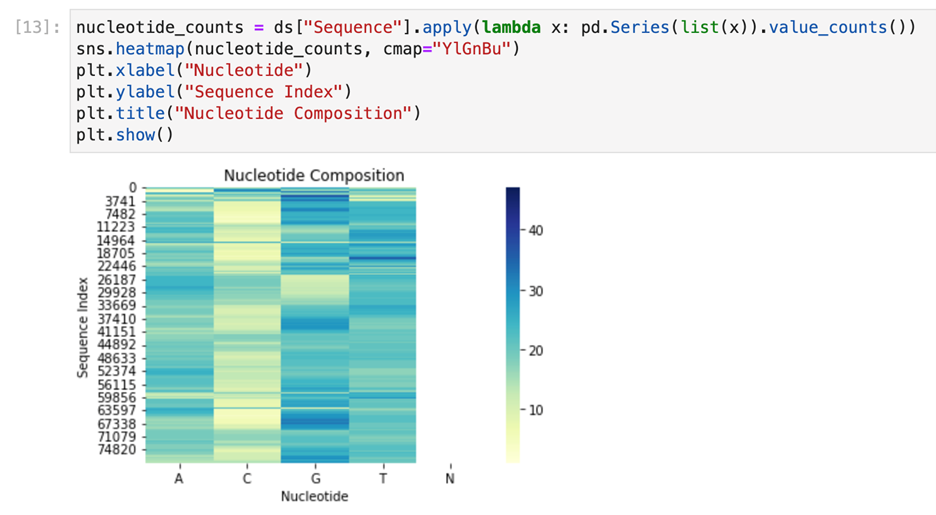
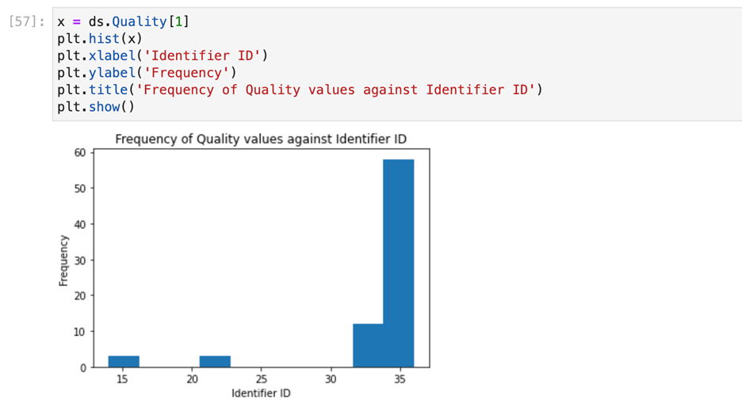
Checkpoint 2
Learnings from checkpoint 1
The datasets we have chosen are ERR4796171.fastq and ERR4796172.fastq. To get a greater number of records we have merged dataset in file named as merged_ERR479617a.fastq. This merged file had 314232 records in it before data cleaning consists of duplicate and null values. Secondly, we checked the duplicate values and created another dataset after deleting null values from the same. The additional data cleaning steps we could have performed are correcting inconsistency, handling outliers, standardizing data and validation data, etc
Additional data cleaning steps for Checkpoint 2:
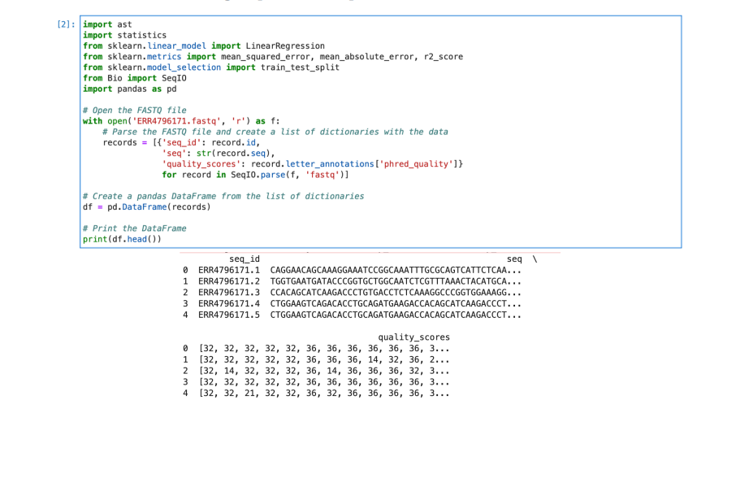Observations
1) In our first observation we have observed that each sequence is having unique sequence Id.
Moreover, each sequence consists of C, A, G, T Letters. The characters C, A, G, T stand for
Cytosine (C), Adenine (A), Guanine (G), and Thymine (T), the four DNA nucleotides. The
precise order or sequence of these nucleotides, which are the DNA molecule's building blocks,
defines an organism's genetic code.
2) The ASCII values of each character are first taken from the fastq file before the data is
converted from ASCII values to integer values. We have used SeqIO.parse() as follows to
do the same. Here we have used letter_annotations[‘phred_quality’] to get
quality scores converted from ASCII values to integer.
3) The most important observation is that RNA sequence is unique for each sequence ID, causes
data points to be unique. As of now, we have calculated average for all the quality scores
points so that it would be easy to predict quality scores based on training and testing data
Response Variable
A response variable that is being investigated or measured in statistics and data analysis that is
anticipated to be influenced by other variables, also referred to as predictor variables or independent
variables the range of ASCII values that could be used to represent quality scores in the Phred+33
encoding scheme is 33 to 126, which corresponds to Phred scores of 0 to 93. Quality scores are crucial
in determining the accuracy of the sequencing data and are often used in downstream analyses such
as variant calling, genome assembly, and alignment.
Response variable given before processing:
R T Q O W J F V D S Y K X H P M N B U
Response variable given after processing:
82 84 81 79 87 74 70 86 68 83 89 75 88 72 80 77 78 66 85

Sample data
Data Preprocessing
Here are some data processing steps we have performed on dataset. First, counted Adenine (A), Cytosine (C), Guanine (G), and Thymine (T) for each sequence. And, appended additional respective columns for the same into dataframe.
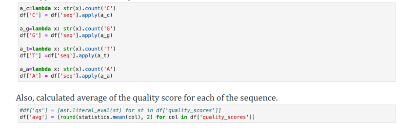
Preprocessing
Choosing Model

Linear Regression Output
We Also used SGD (Stochastic Gradient Descent) method to train the model which gives following Output
R-square after training SGD: 0.817
Intercept term for SGD: 2.9554296503427054e+27
Coefficients for SGD: [4.37121215e+20]
MSE for SGD: 3.3928100497380855e+49
Comparing both models, it can be claimed that the Linear Regression model fits the provided data better if it has a smaller mean squared error (MSE) and a higher R-squared value than the Stochastic Gradient Descent (SGD) model under comparison. A good model should have a lower MSE because it means that the pre-dictions are more likely to match the actual data. A higher R-squared value means that the model fits the data better since it explains a greater percentage of the variation in the response variable
Calculating Test Error Rate
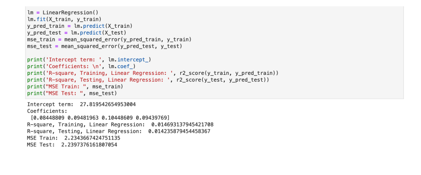
Mean Square error test
If the estimated test error rate is low, it indicates that the model is likely to generalize well to new d ata, meaning that it is a good fit to the data. On the other hand, if the estimated test error rate is high it suggests that the model is overfitting to the training data, and may not perform well on new data. Considering above Linear Regression model, we got low error rate indicates this model fits the data.
Predictions
Based on the given gene sequence data we had plotted a boxplot graph. Looking at the graph the gene sequence having the value maximum which in our case is 32 would make an estima ted prediction of having presence of migraine in the required patient. Based on trained model, the 28 is the average quality score for this particular prediction

Checkpoint 3
Learnings from checkpoint 2
As professor gave the feedback on our checkpoint 2 and referring to class notes that Linear Regression used as a baseline, and it is a valid approach though it has some limitations such as, Linear Regression assumes linearity, Linear Regression is sensitive to outliers. There are more machine learning algorithms available for instance Gradient Boosting or XGBOOST to improve model accuracy
Approach
Random forest is one of the machine learning algorithms and to improve the accuracy and speed of the model such as during prediction, each tree in the forest makes a prediction, and the final prediction is determined by taking a majority vote of all the trees. XGBoost is one of the models for our approach XGBoost can handle missing data and can be parallelized for faster training on large dataset. KNN is another approach for our data set as KNN algorithm can give more accuracy when the optimal value of K is selected, and the data is properly preprocessed by scaling or normalizing the features
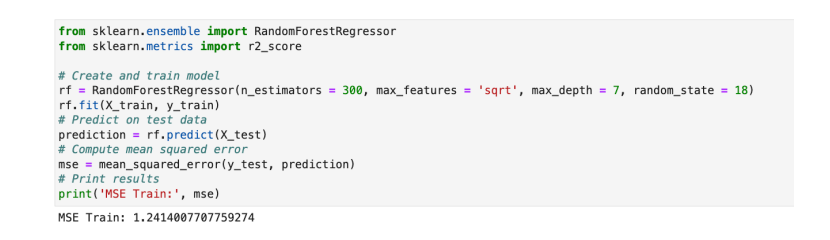
Compare to earlier mean squared error values, this model gives better value with mse = 1.2414000. Which was 2.23 earlier in checkpoint 2 for Linear Regression model.
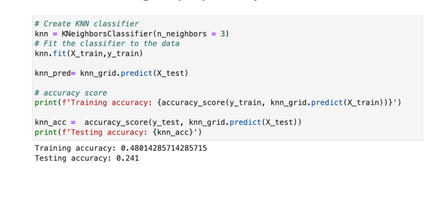
we have trained k-Nearest Neighbor (kNN) model to predict the values,Addition to this, we have tried kNN model with grid search object resulted in getting same result
Lastly, we have trained XGBooster model with objective as reg::squarederror, as,
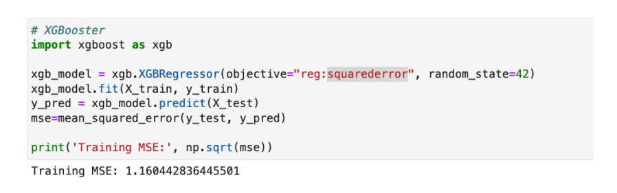
Comparing all the models, it can be claimed that the XG-Boost model fits the provided data better if it has
a smaller mean squared error (MSE) and a higher R-squared value than the Random forest, kNN, and kNN
with grid search object model under comparison.
A good model should have a lower MSE because it means that the pre-dictions are more likely to match the
actual data. A higher R-squared value means that the model fits the data better since it explains a greater
percentage of the variation in the response variable
Test error rate
Comparing models like Linear Regression, Random forest, kNN, kNN with grid search object model and XGBoost model, we got minimum MSE from XGBoost model which is 1.160442836445501
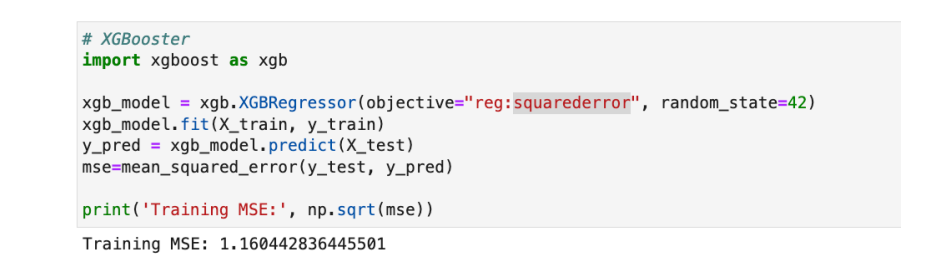
XGBoost is a powerful and flexible machine learning library that offers several techniques for calculating
mean squared error (MSE). Here are some of the best techniques you can use with XGBoost to calculate
MSE:
1. Cross-validation: is a popular technique for evaluating the performance of machine learning models.
With XGBoost, you can use the xgboost.cv function to perform cross-validation and calculate the
MSE for each fold
2. Early stopping: is a technique that can help you prevent overfitting by stopping the training process
when the performance on a validation set stops improving.
3. Regularization: is a technique that can help you reduce overfitting by adding a penalty term to the
loss function.
4. Feature selection: is a technique that can help you identify the most important features in your
dataset and remove the less important ones
Here we are using cross validation method using KFold and cross_val_score to calculate mean squared error value for XGBoost
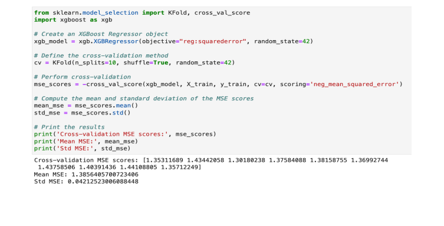
Based on the estimated test error rates, models that fits the data
If the estimated test error rate is low, it indicates that the model is likely to generalize well to new data, meaning that it is a good fit to the data. On the other hand, if the estimated test error rate is high it suggests that the model is overfitting to the training data, and may not perform well on new data
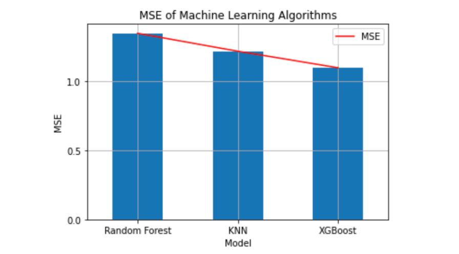
Considering above XGBoost model, we got low error rate indicates this model fits the data
Final Outcome
Finally after compairing all models we took the best model that fits our data and drawn conclusion
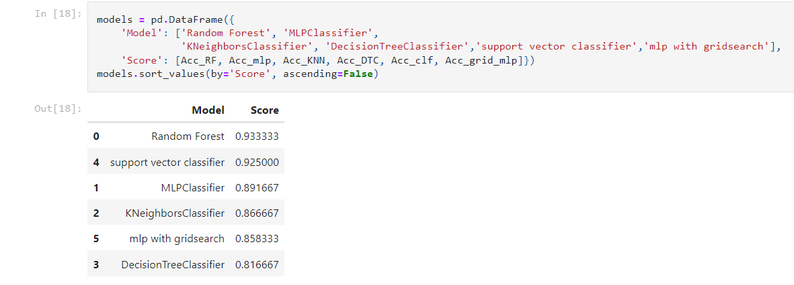Based on the provided accuracy values, the RF model outperforms the MLP and SVM models, achieving the highest accuracy of 93%. This indicates that the RF model is better at classifying the target variable and predicting the correct class labels for new, unseen data. The RF model's superior performance may be due to its ability to handle high-dimensional data and learn complex decision boundaries. RF’s use an ensemble of decision trees to reduce the risk of overfitting and provide robustness against noise and outliers
Feature Importance

This below figure illustrates prediction using histogram to predict actual and predicted values of migraine type Basilar aura migraine. As we have used few records the accuracy of the data predicted is 75 percent.
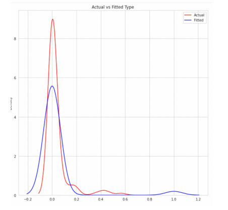Conclusion
The successful training of the Random Forest model with 93% accuracy on classifying the types of migraine and predicting the quality score for gene expression is a significant achievement. This accuracy indicates that the RF model has learned the underlying patterns and relationships between the features and the outcomes in the data. The high accuracy also implies that the model can make reliable predictions for future data. However, it is important to note that the model may have limitations in its generalization ability, meaning that it may not perform well on unseen data from different sources. Therefore, it is necessary to evaluate the model's performance on external validation datasets to ensure its reliability and robustness. Overall, the successful application of the Random Forest model demonstrates the potential for using machine learning algorithms to aid in the diagnosis and treatment of migraine, as well as in predicting the quality score for gene expression.
Future Work
Our project of classifying types of migraines and predicting quality scores for gene expression could be valuable for domain experts in medical field. For example, medical professionals could use the classification of different types of migraines to better understand and diagnose patients, leading to more targeted treatment plans. Additionally, understanding the relationship between gene expression and migraine quality scores could potentially provide insights into the underlying mechanisms of migraines and lead to the development of new treatments. The results of your analysis could inform the work of domain experts by highlighting potential biomarkers or genes that are associated with certain types of migraines or quality scores. These insights could then be further investigated and potentially used to develop more effective treatments or therapies. Overall, project has the potential to provide valuable insights for medical professionals and researchers working in the field of migraine research.
further improvements
One way that the project could be improved is by gathering more data from a larger and more diverse population to increase the generalizability of the results. Additionally, incorporating more relevant features or using alternative feature selection methods could improve the performance of the models. Another possibility is to explore other machine learning algorithms or ensemble methods to potentially achieve even higher accuracy. Further, incorporating external data sources, such as genetic data or medical records, could provide additional insights into the underlying mechanisms of migraine and lead to more personalized treatment options for patients.
Acknowledgements
Our thanks to Prof. Carlos Toxtli, Mr. Ravi Teja, and Ms. Nushrat Humaira for all the help related to understanding the dataset and clarifying the doubts we had throughout the project development.
References
References
[1] ENA Dataset
[2] Processed Dataset
[3] Gnome Sequence
[4] Classification with Neural Network
[5] Transcriptome Extraction
[6] MLP Classification
[7] Random Forest Classification
For a detailed view of the code, check out the GitHub repository:
View the Code on GitHub